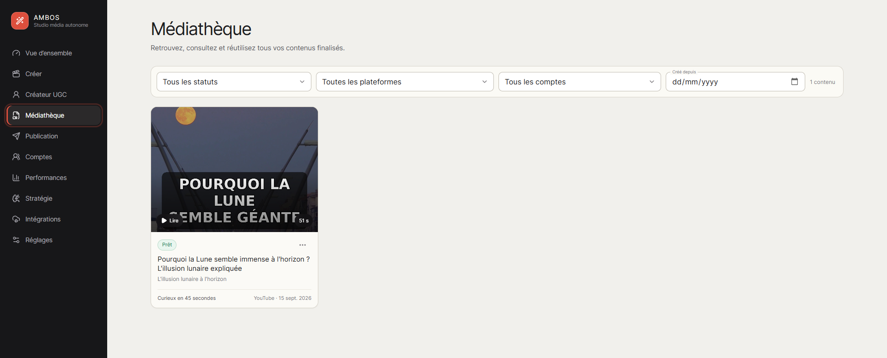

Gagnez du temps
Regroupez vos étapes de préparation et de publication.
AMBOS centralise la préparation, la médiathèque, les comptes connectés et la publication de contenus courts dans une interface claire pensée pour aller vite.

Regroupez vos étapes de préparation et de publication.
Connectez les plateformes que vous choisissez d'utiliser.
Prévisualisez et confirmez les paramètres avant publication.
Une expérience visuelle cohérente avec l'application AMBOS : sobre, structurée et centrée sur le contenu.
Retrouvez, filtrez et réutilisez vos contenus finalisés depuis un catalogue unique.
Préparez les paramètres disponibles et publiez vers les plateformes connectées.
Connectez les comptes pris en charge via leurs mécanismes d'autorisation officiels.
Regroupez les informations disponibles pour suivre les résultats de vos contenus.
AMBOS est conçu pour garder l'utilisateur aux commandes lors de la connexion d'un compte et de l'envoi d'un contenu.
Sélectionnez ou créez le contenu à utiliser dans AMBOS.
Autorisez votre compte avec le flux OAuth officiel de la plateforme.
Contrôlez l'aperçu, la légende et les options de publication disponibles.
La publication est déclenchée à la suite d'une action explicite de l'utilisateur.